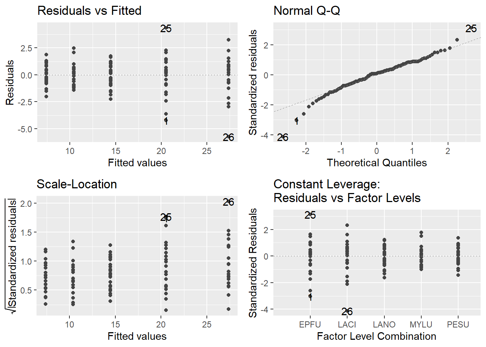
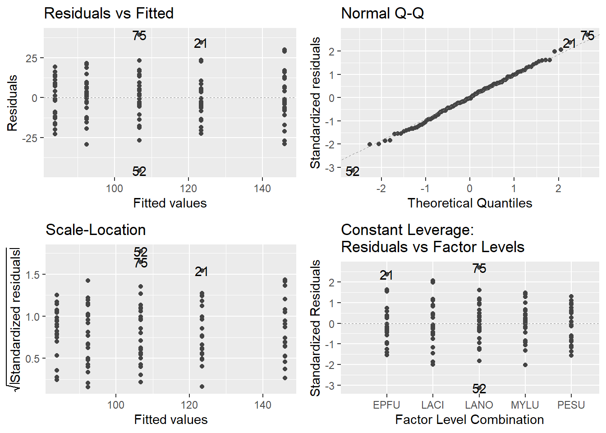
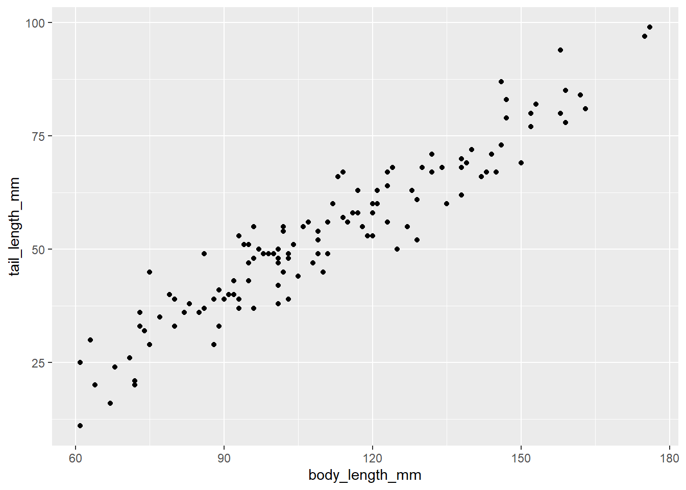
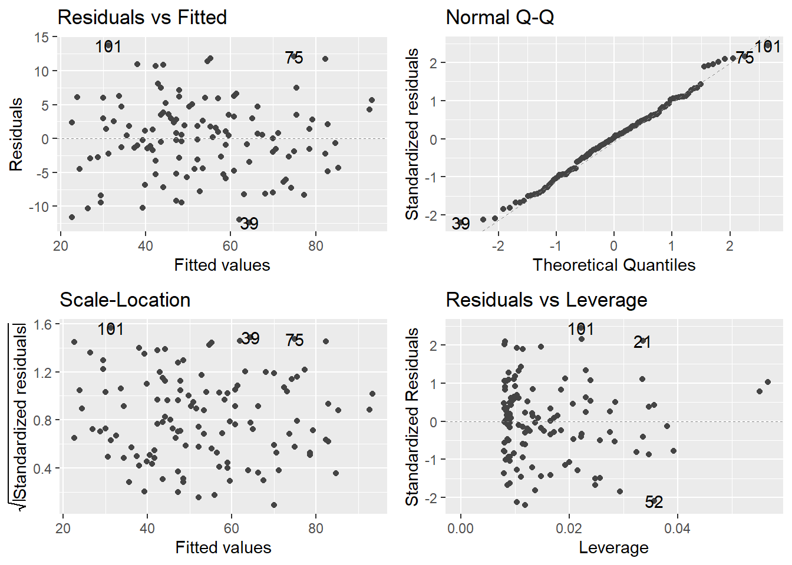
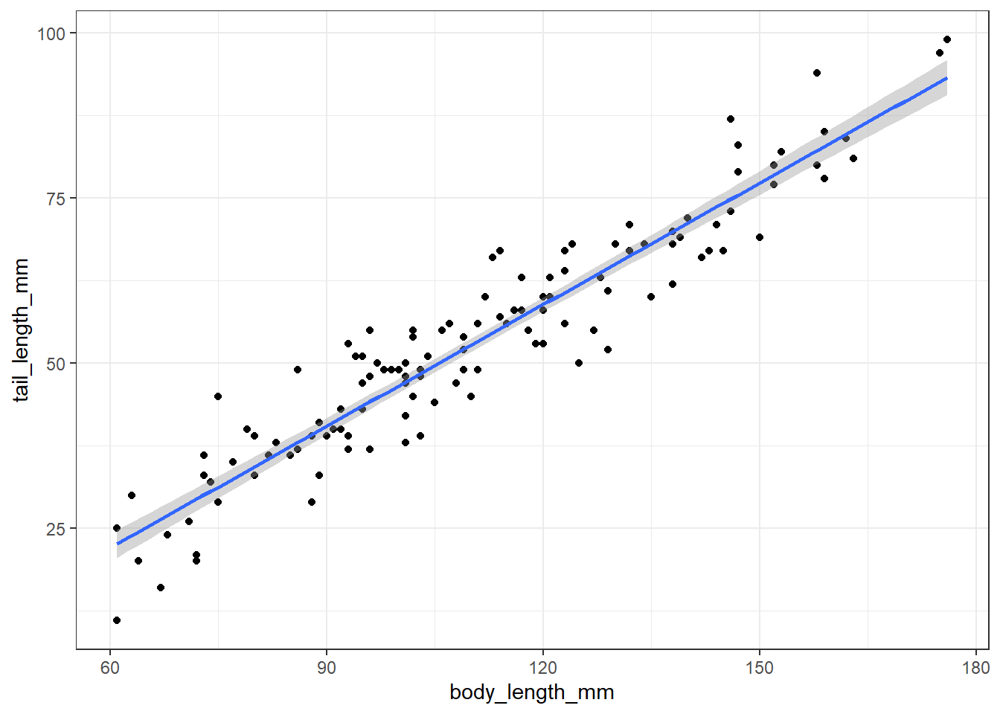

A. Does body mass differ between these five species of bats and, if so, how does body mass differ between the species? - Species the predictor variable is categorical and body mass the response variable is continuous and because we are looking to see if there is a difference between group means, the samples are independent, and there are more than two groups to compare an ANOVA should be run and if a significant difference is found a tukeyHSD should be run as well. The Null Hypothesis is that there is no difference in body mass (mass_g) between the five species of bats and the Alternative Hypothesis is that there is a difference in body mass (mass_g) between at least two of the five species of bats.
The mean for PESU looks to be about 7g, for MYLU looks to be about 11g, for LANO looks to be about 14g, for LACI looks to be about 28, and for EPFU looks to be about 21g. Based on the distribution of the box plots I would guess that there will not be a difference between PESU, MYLU, and LANO but between EPFU/LACI and those three there will be and between EPFU and LACI there will be a difference as well.
model_bat<-lm(mass_g~Species, data = bats)
autoplot(model_bat, smooth.colour =NA)
Warning: Removed 125 rows containing missing values or values outside the scale range
(`geom_line()`).
Removed 125 rows containing missing values or values outside the scale range
(`geom_line()`).

The diagnostic plots show that the model generally fits well. In the top left plot (Residuals vs. Fitted), the variance appears approximately equal across species, suggesting homogeneity of variance and a good model fit. In the top right plot (Normal Q-Q), most data points closely follow the normal distribution, indicating that the residuals are approximately normally distributed. In the bottom left plot (Scale-Location), the Eptesicus fuscus (EPFU) and Lasionycteris noctivagans (LACI) species show slightly more variation in residuals, but the variation is not excessive. Finally, in the bottom right plot (Residuals vs. Leverage), EPFU and LACI species exhibit more leverage due to an outlier, but the leverage is not extreme enough to unduly influence the model. Overall, the model assumptions seem to hold reasonably well, with only minor issues related to the leverage of outliers in a couple of species.
anova(model_bat)
Analysis of Variance Table
Response: mass_g
Df Sum Sq Mean Sq F value Pr(>F)
Species 4 6424.4 1606.11 792.9 < 2.2e-16 ***
Residuals 120 243.1 2.03
---
Signif. codes: 0 '***' 0.001 '**' 0.01 '*' 0.05 '.' 0.1 ' ' 1
From the ANOVA, we see that the p-value is less than 0.05, indicating that the result is statistically significant and F(4,120) = 792.9 indicating much more variance between species that within. This suggests that there is evidence of a difference in body mass (mass_g) across the different species and we can reject the Null Hypothesis.
summary(model_bat)
Call:
lm(formula = mass_g ~ Species, data = bats)
Residuals:
Min 1Q Median 3Q Max
-5.760 -0.760 0.132 0.840 4.368
Coefficients:
Estimate Std. Error t value Pr(>|t|)
(Intercept) 20.5320 0.2846 72.13 <2e-16 ***
SpeciesLACI 6.8280 0.4026 16.96 <2e-16 ***
SpeciesLANO -6.0640 0.4026 -15.06 <2e-16 ***
SpeciesMYLU -10.1200 0.4026 -25.14 <2e-16 ***
SpeciesPESU -13.1240 0.4026 -32.60 <2e-16 ***
---
Signif. codes: 0 '***' 0.001 '**' 0.01 '*' 0.05 '.' 0.1 ' ' 1
Residual standard error: 1.423 on 120 degrees of freedom
Multiple R-squared: 0.9635, Adjusted R-squared: 0.9623
F-statistic: 792.9 on 4 and 120 DF, p-value: < 2.2e-16
From the summary table, we see that EPFU is the intercept. Comparing the other species to EPFU, there are significant differences in body mass (mass_g).
Looking at the Tukey and CLD output, each species is assigned a unique letter, indicating that the body mass (mass_g) of each species differs significantly from the others.LACI has a 6.83g higher body mass compared to EPFU, while LANO, MYLU, and PESU have lower body masses relative to EPFU, with differences of -6.06g, -10.12g, and -13.12g. LANO is -12.89g lower than LACI, MYLU is -16.95g lower than LACI, and PESU is -19.95g lower than LACI. Additionally, MYLU is -4.06g lower than LANO, PESU is -7.06g lower than LANO, and PESU is -3.00g lower than MYLU. These significant differences indicate that EPFU has the highest body mass, with PESU the lowest, while the others fall in between.
B. Does body length differ between these five species of bats and, if so, how does body mass differ between the species?
Species the predictor variable is categorical and body length the response variable is continuous and because we are looking to see if there is a difference between group means, the samples are independent, and there are more than two groups to compare an ANOVA should be run and if a significant difference is found a tukeyHSD should be run as well. The Null Hypothesis is that there is no difference in body length (body_length_mm) between the five species of bats and the Alternative Hypothesis is that there is a difference in body length (body_length_mm) between at least two of the five species of bats.
The mean for PESU looks to be about 85mm, for MYLU looks to be about 92mm, for LANO looks to be about 105mm, for LACI looks to be about 145mm, and for EPFU looks to be about 123. Based on the distribution of the box plots I would guess that there will not be a difference between PESU, MYLU, and LANO but between EPFU/LACI and those three there will be and between EPFU and LACI there will be a difference as well.
model_bat1<-lm(body_length_mm~Species, data = bats)
autoplot(model_bat1, smooth.colour =NA)
Warning: Removed 125 rows containing missing values or values outside the scale range
(`geom_line()`).
Removed 125 rows containing missing values or values outside the scale range
(`geom_line()`).

The diagnostic plots show that the model generally fits well. In the top left plot (Residuals vs. Fitted), the variance appears approximately equal across species, suggesting homogeneity of variance and a good model fit. In the top right plot (Normal Q-Q), most data points closely follow the normal distribution, indicating that the residuals are approximately normally distributed. In the bottom left plot (Scale-Location), the variation appear similar among the different species. Finally, in the bottom right plot (Residuals vs. Leverage), the leverage appear to be about the same across different species. Overall, the model assumptions seem to hold reasonably well.
anova(model_bat1)
Analysis of Variance Table
Response: body_length_mm
Df Sum Sq Mean Sq F value Pr(>F)
Species 4 62044 15511 70.498 < 2.2e-16 ***
Residuals 120 26403 220
---
Signif. codes: 0 '***' 0.001 '**' 0.01 '*' 0.05 '.' 0.1 ' ' 1
From the ANOVA, we see that the p-value is less than 0.05, indicating that the result is statistically significant also, F(4,120)=70.498 indicating that there is more variation between Species than within them. This suggests that there is evidence of a difference in body length (body_length_mm) across the different species and we can reject the Null Hypothesis.
summary(model_bat)
Call:
lm(formula = mass_g ~ Species, data = bats)
Residuals:
Min 1Q Median 3Q Max
-5.760 -0.760 0.132 0.840 4.368
Coefficients:
Estimate Std. Error t value Pr(>|t|)
(Intercept) 20.5320 0.2846 72.13 <2e-16 ***
SpeciesLACI 6.8280 0.4026 16.96 <2e-16 ***
SpeciesLANO -6.0640 0.4026 -15.06 <2e-16 ***
SpeciesMYLU -10.1200 0.4026 -25.14 <2e-16 ***
SpeciesPESU -13.1240 0.4026 -32.60 <2e-16 ***
---
Signif. codes: 0 '***' 0.001 '**' 0.01 '*' 0.05 '.' 0.1 ' ' 1
Residual standard error: 1.423 on 120 degrees of freedom
Multiple R-squared: 0.9635, Adjusted R-squared: 0.9623
F-statistic: 792.9 on 4 and 120 DF, p-value: < 2.2e-16
From the summary table, we see that EPFU is the intercept. Comparing the other species to EPFU, there are significant differences in body length (body_length_mm).
Looking at the Tukey and CLD output, each species is assigned a unique letter, indicating that the body length (body_length_mm) of each species differs significantly from the others. Specifically, LACI has a 22.64mm longer body length compared to EPFU, while LANO, MYLU, and PESU have shorter body lengths relative to EPFU, with differences of -16.72mm, -31.04mm, and -39.52mm, respectively. Further comparisons show that LANO is -39.36mm shorter than LACI, MYLU is -53.68mm shorter than LACI, and PESU is -62.16mm shorter than LACI. Additionally, MYLU is -14.32mm shorter than LANO, PESU is -22.80mm shorter than LANO, and PESU is -8.48mm shorter than MYLU, though this last difference is not statistically significant. These findings indicate that EPFU has the longest body length overall, with PESU the shortest, and the other species vary between these two.
C. Is the number of ticks found on the bats associated with their sex or age?
D. Disregarding species, is there a relationship in bats between tail length and body length?
Both the predictor variable, body length, and the response variable, tail length, are continuous data, and since we are testing for a relationship between these two variables with only one predictor, a linear regression analysis is appropriate. The null hypothesis is that there is no relationship between body length and tail length, while the alternative hypothesis is that there is a relationship between body length and tail length.
ggplot(bats, aes(x = body_length_mm, y = tail_length_mm))+geom_point()

There appears to be a positive relationship between tail length and body length, where as body length increases, tail length also increases. The range for body length spans from 60 to 177, while the range for tail length spans from about 10 to 100. Based on this, the estimated slope of the relationship is approximately (100 - 10) / (177 - 60) = 0.77. The y-intercept seems to be around -10. There are no significant outliers evident in the data, and the distribution appears to be normal, suggesting a valid linear relationship between the two variables.
model_bat3<-lm(tail_length_mm~body_length_mm, data = bats)
autoplot(model_bat3, smooth.colour =NA)
Warning: Removed 125 rows containing missing values or values outside the scale range
(`geom_line()`).
Removed 125 rows containing missing values or values outside the scale range
(`geom_line()`).
Removed 125 rows containing missing values or values outside the scale range
(`geom_line()`).

The diagnostic plots show that the model generally fits well. In the top left plot (Residuals vs. Fitted), the variance appears approximately equal suggesting homogeneity of variance and a good model fit. In the top right plot (Normal Q-Q), most data points closely follow the normal distribution, indicating that the residuals are approximately normally distributed. In the bottom left plot (Scale-Location), the variation appear similar. Finally, in the bottom right plot (Residuals vs. Leverage), the leverage appear to be about the same with a few datapoint having larger leverage but not too many to be concerning. Overall, the model assumptions seem to hold reasonably well.
anova(model_bat3)
Analysis of Variance Table
Response: tail_length_mm
Df Sum Sq Mean Sq F value Pr(>F)
body_length_mm 1 33391 33391 1037.2 < 2.2e-16 ***
Residuals 123 3960 32
---
Signif. codes: 0 '***' 0.001 '**' 0.01 '*' 0.05 '.' 0.1 ' ' 1
From the ANOVA, we see that the p-value is less than 0.05, indicating that the result is statistically significant, and F(1,123) = 1037.2, indicating a large effect size. The large F-value suggests that the variability in tail length is largely explained by the variability in body length, and the relationship between the two variables is strong. This provides evidence of a significant relationship in bats between tail length and body length, allowing us to reject the null hypothesis.
summary(model_bat3)
Call:
lm(formula = tail_length_mm ~ body_length_mm, data = bats)
Residuals:
Min 1Q Median 3Q Max
-12.4242 -4.3148 0.1779 3.4913 13.7551
Coefficients:
Estimate Std. Error t value Pr(>|t|)
(Intercept) -14.83738 2.16786 -6.844 3.22e-10 ***
body_length_mm 0.61443 0.01908 32.206 < 2e-16 ***
---
Signif. codes: 0 '***' 0.001 '**' 0.01 '*' 0.05 '.' 0.1 ' ' 1
Residual standard error: 5.674 on 123 degrees of freedom
Multiple R-squared: 0.894, Adjusted R-squared: 0.8931
F-statistic: 1037 on 1 and 123 DF, p-value: < 2.2e-16
In conclusion, the analysis of the relationship between body length and tail length in bats shows a statistically significant result. The estimated slope of 0.614 and intercept of -14.837 closely align with the predicted values, confirming a strong positive relationship between body length and tail length. The high F-statistic (1037) and low p-value (< 2.2e-16) further support this significant relationship, with an R-squared value of 0.894 indicating that approximately 89.4% of the variation in tail length can be explained by body length. As a result, we reject the null hypothesis and conclude that body length is a significant predictor of tail length in bats.
ggplot(bats, aes(x = body_length_mm, y = tail_length_mm))+geom_point()+geom_smooth(method ='lm')+theme_bw()
`geom_smooth()` using formula = 'y ~ x'

Adding the method = ‘lm’ shows that a linear model is correct for this test and the two variables are related.